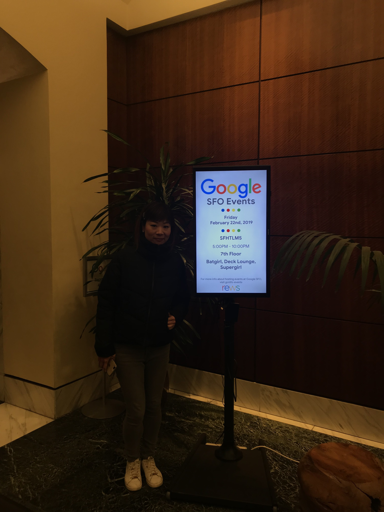
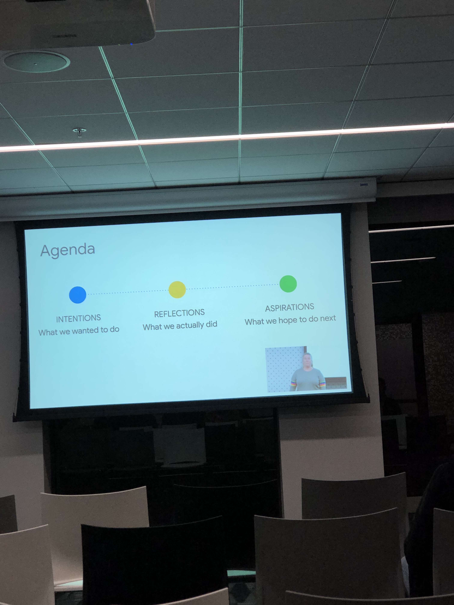

What Is Web.Dev
Web.dev is the ultimate resource for developers of all backgrounds to learn, create, and solve on the web. It's meant to not only educate developers, but help them apply what they've learned to any site they work on, be it personal or business.
Where You Can Learn And Measure
After you've launched your site, come back to web.dev and measure how well it supports your users. If there are areas where it can improve, you'll get immediate steps to increase your metrics. As the web advances, users' expectations get higher. With web.dev's guidance, you can give your users the best possible experience, wherever they are!
What I Learnt
First of all, I recoginzed I have to know users, and I have solutions for their needs. But, to win users' loyalty, I also need to give them the best possible experience with my site.
The site principles:
- Find your site
- Open your site from any device
- Load your site on a poor network connection
- Use your site with assistive technology, like a screen reader